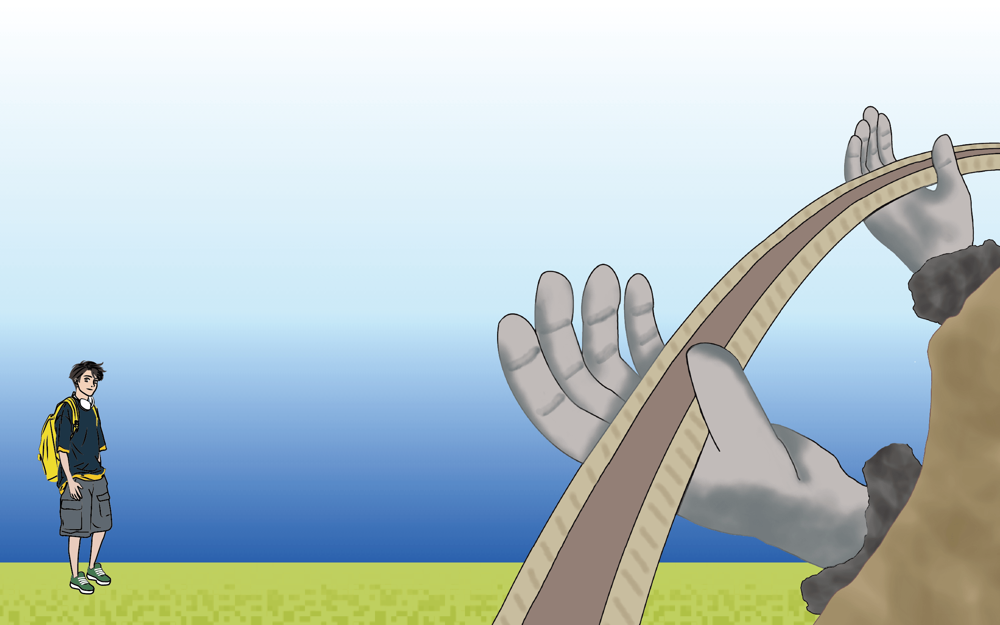
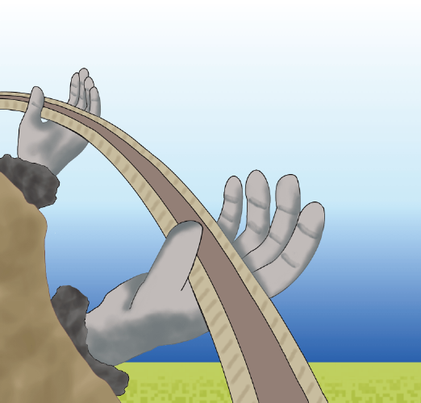
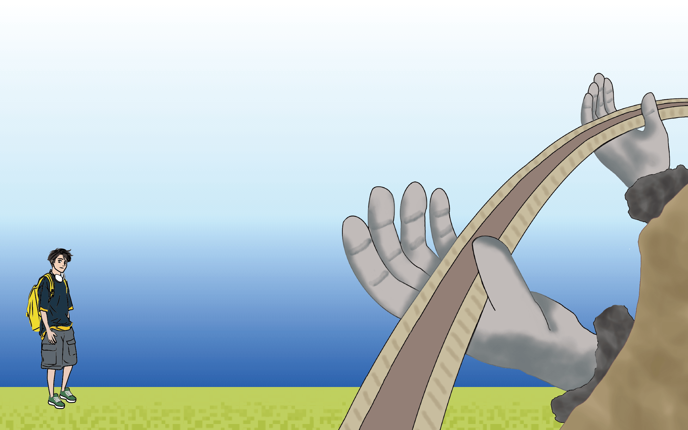
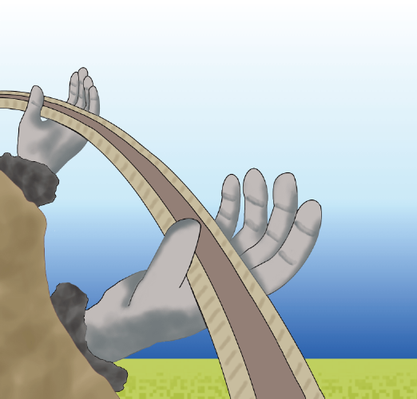
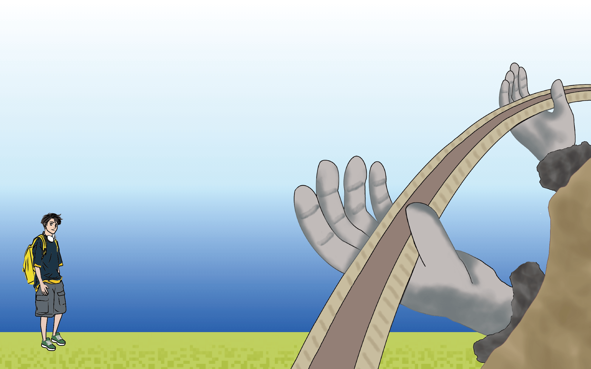
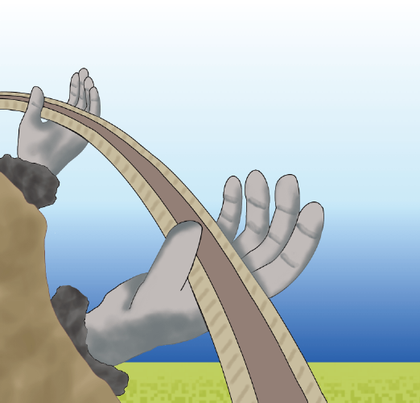
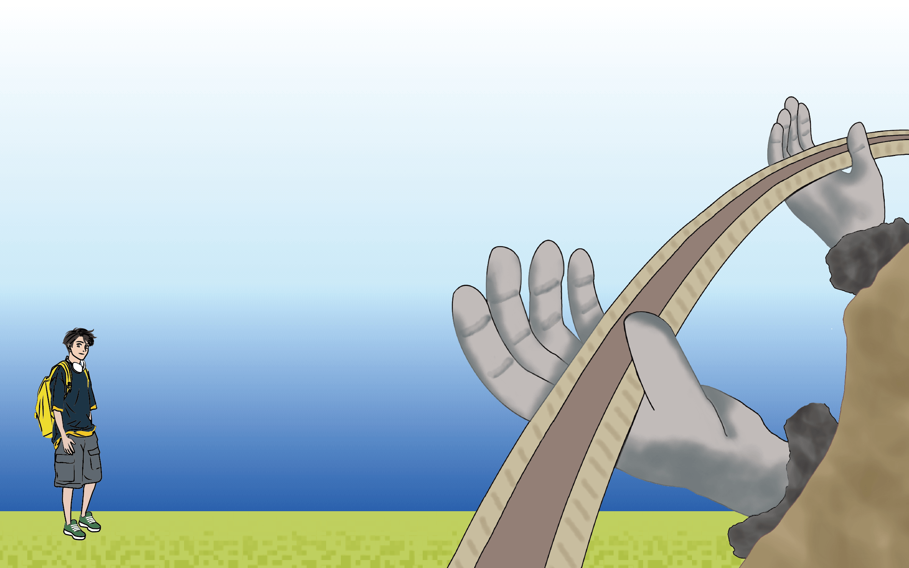
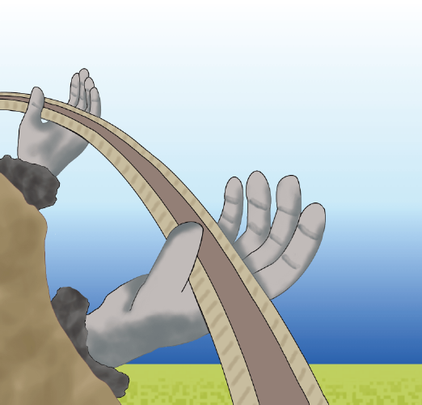

越南Vietnam
 







參考網站
這是我們的資料來源（可以自行複製下列網址查看喔）
習俗文化
飲食文化
越南美食：
https://hellovietnam.tw/tw/vietnam/390
https://guide.michelin.com/tw/zh_TW/article/features/vietnam-101-how-to-eat-vietnamese-food-like-a-local
越南河粉介紹：
https://www.foodnext.net/life/culture/paper/5098759029
烤豬肉米線介紹：
https://aseanplusjournal.com/2017/07/12/bun_cha_vietnam/
特殊節日
越南節日介紹：
https://ai.glossika.com/zh-tw/blog/festivals-in-vietnam
https://www.adotrip.com/zh-TW/blog/famous-festival-of-vietnam
建築特色
建築介紹
地標塔 81：
http://www.prestigehw.com/en/hotel-vinpearl-luxury-landmark-81.html
金融塔：
http://www.bitexcofinancialtower.com/
佛手金橋：
hhttps://photoblog.hk/204257/%E8%B6%8A%E5%8D%97%E6%96%B0%E5%BB%BA%E6%B5%B7%E6%8B%94-1400-%E5%85%AC%E5%B0%BA%E3%80%8C%E5%B7%A8%E5%9E%8B%E4%BD%9B%E6%89%8B%E9%87%91%E6%A9%8B%E3%80%8D%EF%BC%8C%E8%A7%80%E6%99%AF%E5%A3%AF%E9%BA%97/
圖片來源
以下是圖片連結，皆是創用CC授權或組員親自拍攝
習俗文化
飲食文化
越南河粉：
https://live.staticflickr.com/7176/6902884131_f3248e58d1_b.jpg
越式法國麵包：
https://live.staticflickr.com/65535/53188096929_0567e674c0_b.jpg
越南春捲：
https://upload.wikimedia.org/wikipedia/commons/1/16/Ch%E1%BA%A3_gi%C3%B2.jpg
烤豬肉米線：
https://live.staticflickr.com/4110/4977454993_e298ca3193_b.jpg
蟹肉粉條湯：
https://live.staticflickr.com/4095/4735017807_059fe632ce_b.jpg
特殊節日
越南獨立日：
https://live.staticflickr.com/3116/2799938764_b25d9ea5e3_b.jpg
越南國慶日：
https://live.staticflickr.com/65535/48681967593_a8d5e713f6_b.jpg
林節
https://goviettrip.com/uploaded/vietnam/lim-fesival.jpg
順化節：
https://live.staticflickr.com/7395/26399894374_0feac2d01b_b.jpg
建築特色
建築圖片
地標塔 81
https://upload.wikimedia.org/wikipedia/commons/3/32/Landmark_81_%2832099609868%29.jpg
金融塔：
https://live.staticflickr.com/7831/31743790527_4c88fbd086_b.jpg
日新橋：
https://upload.wikimedia.org/wikipedia/commons/f/f6/Nhat_Tan_Bridge.jpg
昇龍皇城：
https://live.staticflickr.com/4826/32451244358_0cdd11ff8c_b.jpg
西都城：
https://live.staticflickr.com/3955/15568971945_e5a83b2afb_b.jpg
天姥寺：
https://upload.wikimedia.org/wikipedia/commons/d/dc/B%E1%BA%A3o_th%C3%A1p_c%E1%BB%A7a_Ch%C3%B9a_Thi%C3%AAn_M%E1%BB%A5%2C_th%C3%A1ng_3_n%C4%83m_2021_%286%29.jpg
佛手金橋：
https://images.pexels.com/photos/7715276/pexels-photo-7715276.jpeg
 參考網站
參考網站
 圖片來源
圖片來源